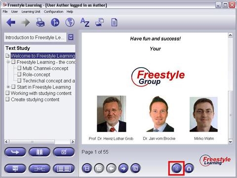

The Notes Manager is an implementation of a Context-Dependent View Manager. If your current Learning Unit supports this View, you find an additional button in the right area of the Interaction Panel of every other View, the Context-Dependent Activation button for the Notes Manager. This button displays an empty document or a document with lines written on it.

If document button is empty, it means that there exists no note for the currently selected element of another View, whereas the written document symbol indicates that a note exists. You can directly switch to this note element by pressing the Context-Dependent Activation button. For editing a note, be sure to enter the Edit Mode first (see section above). Working with the Notes elements is much the same like working with the Text Study elements. They are also hypertext documents which may contain text, pictures and hyperlinks to web urls to or other Freestyle Learning Views.
Context-Dependent Activation Buttons
| Create note element | Activate Notes View and creates new note element | |
| View note | Activate Notes View and display note element |
Back to Main Help Page